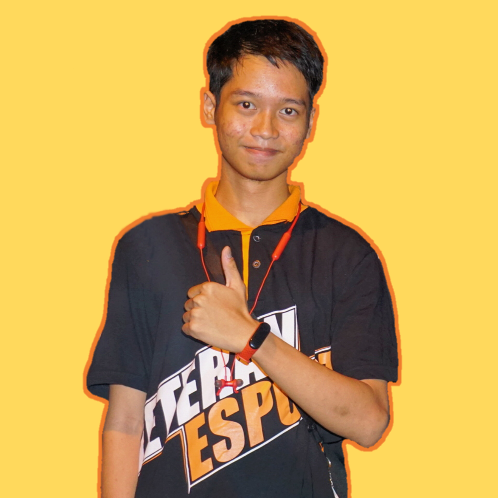
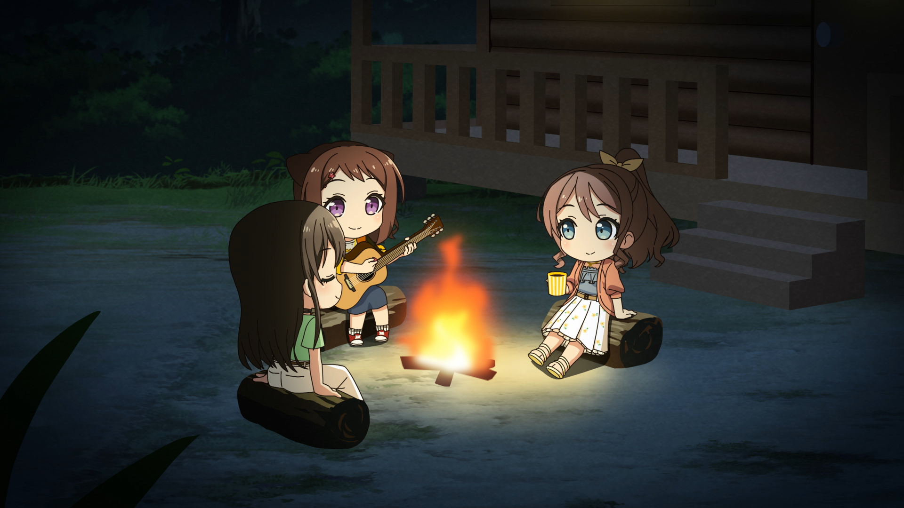
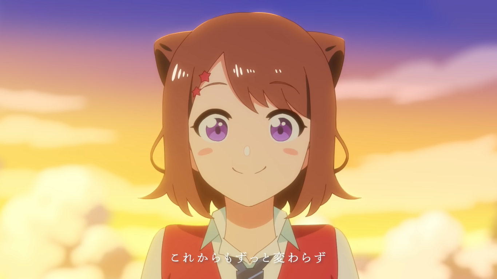
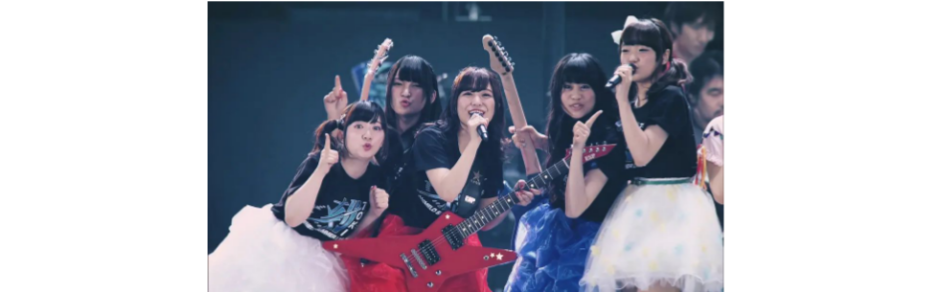

About Me
Saya adalah anak pertama dari 4 bersaudara. Saat ini sedang mengikuti Studi Independen Bersertifikat Batch 2 Dicoding.
Saya berkomitmen untuk Lulus dari kelas SIB dan nantinya saya ingin mengimplementasikan ilmu yang telah saya pelajari.
Saya memiliki beberapa hobi, beberapa diantaranya adalah bermain Game dan menonton Film.
Contact


Hobby

Saya memiliki beberapa hobi, salah satu diantaranya adalah menonton anime.
Ada banyak hal yang dapat dipelajari dari menontotn anime, mulai dari kisah hidup dari suatu karakter, character development, dll.
Character

Toyama Kasumi (戸山 香澄) adalah siswa tahun pertama di Hanasakigawa Girls' High School dan merupakan anggota Poppin'Party.
Di luar band dia berteman dengan Minato Yukina dan Maruyama Aya, keduanya dia sebut sebagai senpainya.
Kasumi tinggal bersama orang tuanya dan memiliki seorang adik perempuan, Asuka - yang dia panggil "Aa-chan" - namun, tidak selalu jelas siapa yang lebih bertanggung jawab dari keduanya.
Ketika dia melihat bintang-bintang suatu malam sebagai seorang anak, dia mendengar gemerlap "Star Beat", dan sejak itu, dia telah mencarinya.
Dia percaya bahwa dia menemukannya setelah dia melihat gitarnya untuk pertama kalinya, dan ketika dia membentuk Poppin'Party.
Band

 adalah sebuah band wanita Jepang yang dibentuk pada tahun 2015 sebagai bagian dari media franchise Bushiroad BanG Dream!.
Anggota grup ini adalah aktris pengisi suara yang memerankan karakter fiksi dalam serial anime franchise dan game mobile BanG Dream! Girls Band Party!.
adalah sebuah band wanita Jepang yang dibentuk pada tahun 2015 sebagai bagian dari media franchise Bushiroad BanG Dream!.
Anggota grup ini adalah aktris pengisi suara yang memerankan karakter fiksi dalam serial anime franchise dan game mobile BanG Dream! Girls Band Party!.
Members:
- Kasumi Toyama (CV: Aimi Terakawa) - guitar & vocals
- Tae Hanazono (CV: Sae Otsuka) - guitar
- Rimi Ushigome (CV: Rimi Nishimoto) - bass
- Arisa Ichigaya (CV: Ayasa Itou) - keyboard
- Saaya Yamabuki (CV: Ayaka Ohashi) - drums